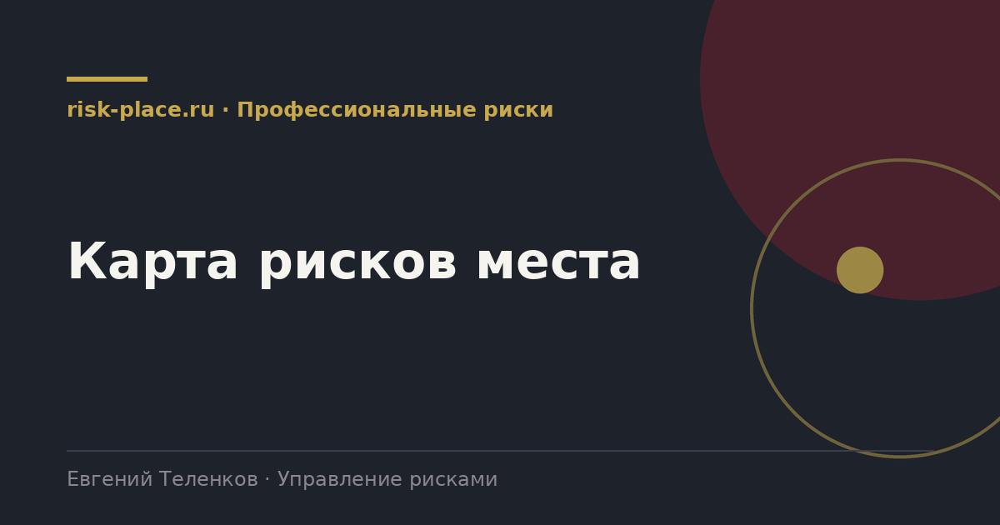

Главная · Библиотека · Профессиональные риски · Карта рисков места
Библиотека · Профессиональные риски
Основной рабочий документ оценки. Его читает и подписывает работник, поэтому написан он должен быть человеческим языком.

Форма не установлена нормативно, работодатель определяет ее сам. Этот состав закрывает требования.
| Раздел | Содержание |
|---|---|
| Шапка | Наименование работодателя, подразделение, наименование рабочего места и должности, число работников, в том числе женщин и лиц до 18 лет |
| Основание | Реквизиты приказа, состав комиссии, применяемый метод оценки, дата проведения |
| Выполняемые операции | Краткий перечень трудовых операций, при выполнении которых возможен контакт с опасностями |
| Таблица опасностей | Опасность, источник, возможный вред, существующие меры, вероятность, тяжесть, уровень риска |
| Меры снижения | Планируемые меры по опасностям с высоким и недопустимым уровнем, срок, ответственный |
| Средства защиты | Требуемые средства индивидуальной и коллективной защиты по опасностям |
| Подписи | Члены комиссии, дата. Отдельный лист ознакомления работников |
Трудовой кодекс требует информировать работника об условиях и охране труда на рабочем месте, о существующих профессиональных рисках и их уровнях. Карта это самый естественный носитель такой информации, если она написана понятно.
Практика, которая работает лучше подписи в журнале. Из карты делается короткая выжимка на один лист, три-пять главных опасностей рабочего места, что может произойти, что делать, чтобы не произошло. Этот лист вывешивается на рабочем месте и разбирается при инструктаже. Полная карта хранится в службе охраны труда. Работник в результате знает свои риски, а не расписывается за прочтение двенадцати страниц.
Карта оценки рисков связана с картой специальной оценки условий труда, но не заменяет ее и не заменяется ею. Специальная оценка измеряет фактические уровни вредных и опасных факторов на рабочем месте. Оценка рисков охватывает более широкий круг опасностей, включая те, что не измеряются приборами, и оценивает вероятность события.
Результаты специальной оценки при этом являются одним из источников для выявления опасностей, и ссылаться на них в карте правильно. Расхождение между двумя документами по одному и тому же фактору вызывает вопросы, поэтому их стоит сверять.
Частые вопросы
Одна форма для любого вопроса
Расскажем о ближайших датах, предложим формат под ваш состав участников и назовем порядок бюджета.
Предпочитаете почту — напишите на info@risk-place.ru. Адрес: Москва, улица Скаковая, 32с2.
 risk-
risk-